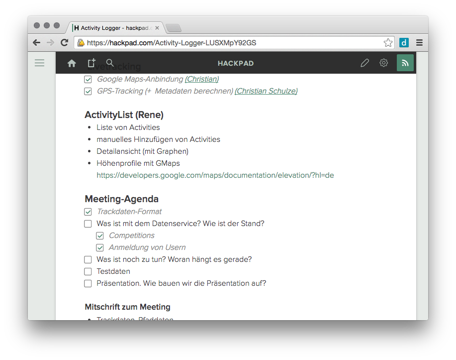
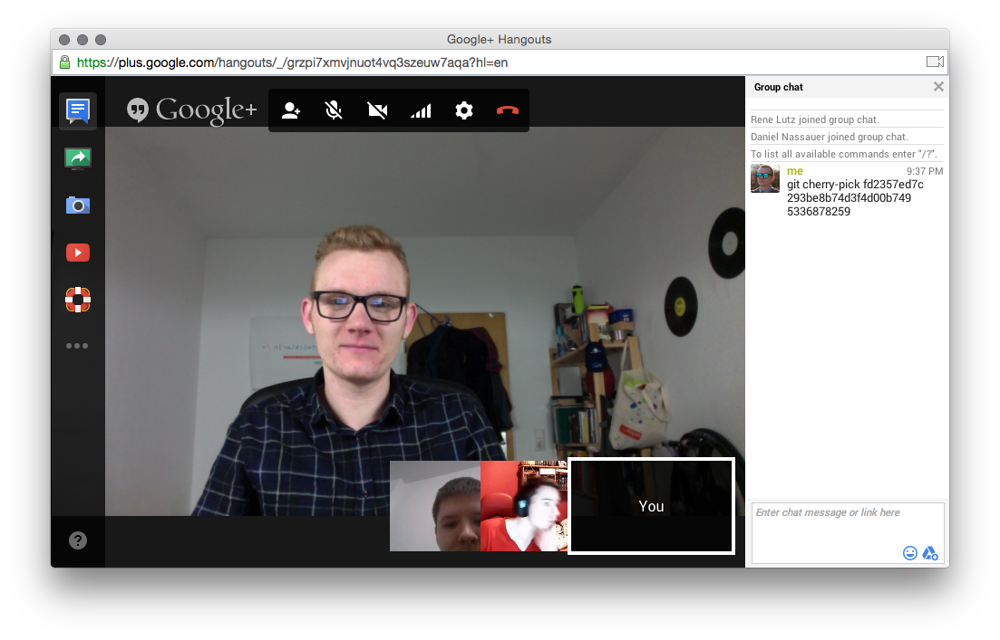
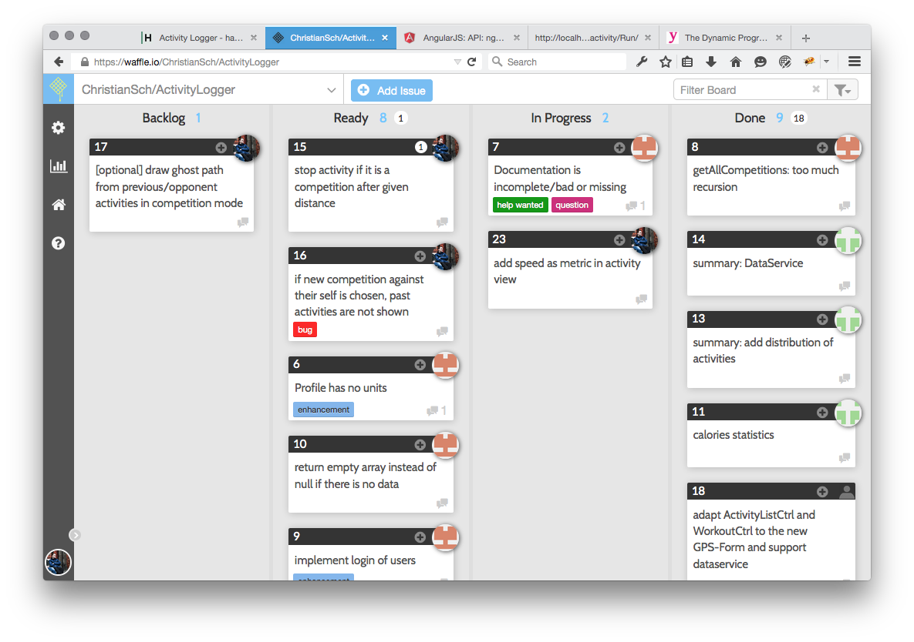

ActivityLogger
Daniel Nassauer, Rene Lutz,
Elvis Fotsing & Christian Schulze
ActivityLogger: Organisation
- Kommunikation/Organisation mit Hackpad,
Google Hangouts, GitHub Issues und Emails
- Aufgabenteilung mit waffle.io (als Scrumboard)
- Sourcecodeverwaltung mit GitHub
ActivityLogger: Hackpad
Kollaborative Online-Dokumente

ActivityLogger: Google Hangouts
Online-Videokonferenzen

ActivityLogger: waffle.io
Scrumboard auf Basis von GitHub-Issues

ActivityLogger: Soll-Kriterien
- Verwalten von sportlichen Aktivitäten (CRUD)
- Liveaufzeichnung einer Aktivität
- Kartendarstellung einer Aktivität
- Wettkampfmodus 1: User tritt gegen eigene Vergangene Activity an
- Sicherung der Daten in einem Backend
ActivityLogger: Kann-Kriterien
- Multi-User-Fähigkeit
- Wettkampfmodus 2: User können in festgelegten Streckenlängen gegeneinander antreten
ActivityLogger: Das Produkt